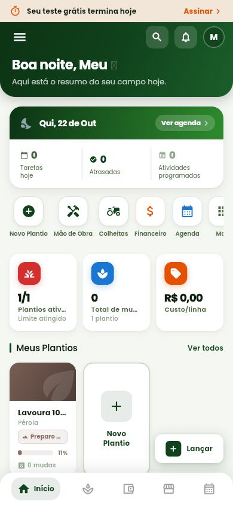
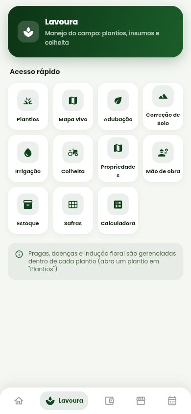
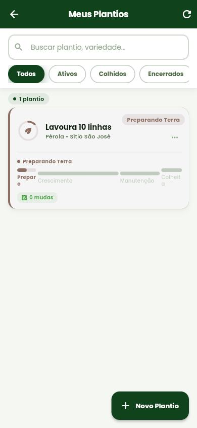
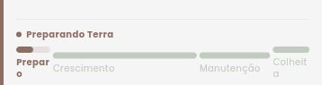
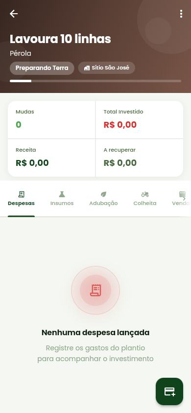
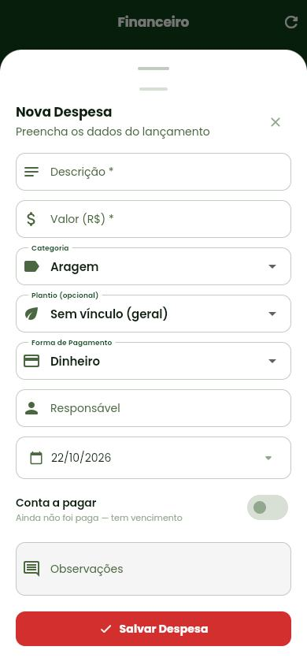
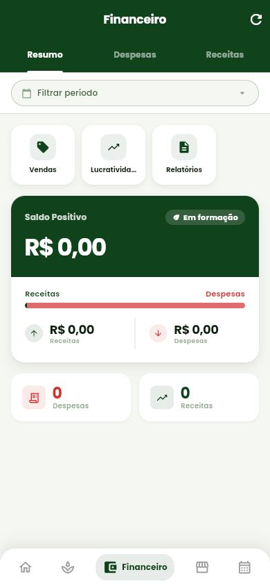
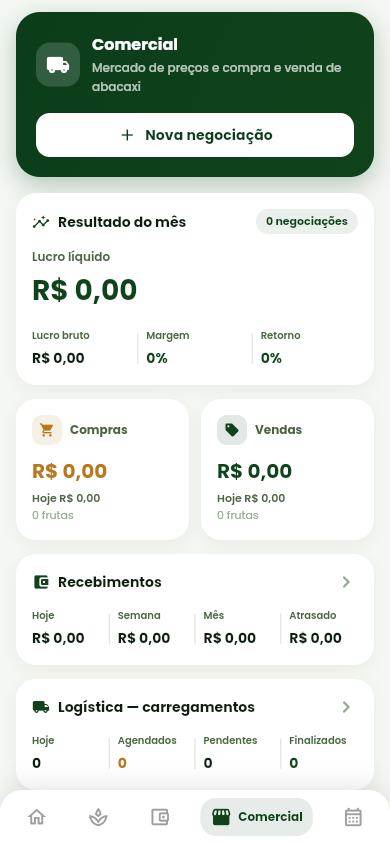
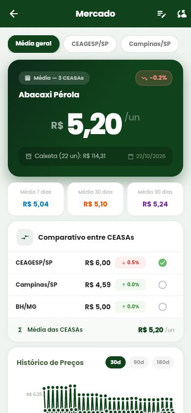

Doze ações escondidas num menu ⋮
Plano de manejo, Linha do tempo, Indução floral, Pragas e doenças, Irrigação, Correção de solo e Análise da área só aparecem no menu de três pontos do plantio.

Meu Plantio · proposta de reestilização · versão 4 · 22/10/2026
O Meu Plantio é um aplicativo Android e iOS, e esta proposta parte do celular. São oito telas redesenhadas lado a lado com as de hoje, usando padrões que quem tem celular já conhece: abas embaixo, listas agrupadas, formulário que sobe de baixo, puxar para atualizar e botão principal ao alcance do polegar. O visual é de caderno de campo, sem os enfeites típicos de layout gerado por IA. O mesmo app se ajusta ao computador (portal web) e ao tablet. Nenhuma funcionalidade sai.
Funcionalidades mapeadas
—
todas presentes na proposta
Telas de celular
8
hoje e proposta, lado a lado
Ações escondidas hoje
12
no menu ⋮ de cada plantio
Área mínima de toque
48 px
Android e iOS
01 · O app
À esquerda, a tela de hoje (captura do app em 22/10/2026). À direita, a proposta. A conta de teste está vazia, então as propostas usam números de exemplo.

Quinta, 22 de outubro
Plantios ativos
1 de 1
limite do plano
Mudas
12.000
em 1 plantio
Custo por linha
R$ 743,00
10 linhas
Tarefas hoje
0
0 atrasadas
A tela segue a ordem em que o produtor olha: avisos, o que lançar, os números, o plantio e o dinheiro.

Manejo do campo
Pragas, doenças e indução floral ficam dentro de cada plantio.
A grade de 11 ícones dentro de quadradinhos é o padrão mais repetido em app gerado por IA. Uma lista agrupada é o que os próprios aplicativos do sistema usam (Ajustes no iPhone, Configurações no Android), e cabe mais informação.

Preparando terra
Plano gratuito: 1 de 1 plantio usado.
A barra de progresso de hoje quebra os nomes das fases ("Prepar o", "Colheit a"). No lugar entra o cronograma do ciclo mês a mês, com o dia de hoje marcado em amarelo.


Pérola · Sítio São José · 10 linhas
Preparando terra
Investido
R$ 7.430,00
Receita
R$ 0,00
Mudas
12.000
A recuperar
R$ 7.430,00
Hoje, quase tudo o que se faz num plantio fica escondido no menu ⋮. Na proposta, cada ação tem lugar fixo na tela.

Valor *
R$980,00
Os campos são os mesmos de hoje, organizados como formulário de app: valor em destaque, escolhas em linhas que abrem a lista de opções, e o botão de salvar ao alcance do polegar.

Todos os plantios
Saldo do mês
−R$ 7.430,00
volta na colheita
A pagar
R$ 4.800,00
vence 10/11
Receitas
R$ 0,00
Despesas
R$ 7.430,00
As mesmas abas de hoje (Resumo, Despesas, Receitas) ficam num controle segmentado. O resumo passa a mostrar os lançamentos, e não só os totais.

Compra e venda de abacaxi
Lucro líquido
R$ 0,00
0 negociações
Margem
0%
retorno 0%
Compras
R$ 0,00
0 frutas
Vendas
R$ 0,00
0 frutas
Os mesmos dados do painel de hoje, sem os cartões coloridos. Os sete quadradinhos do "Acesso rápido" viram duas listas.

Abacaxi Pérola · cotação de 22/10
Média das 3 CEASAs
R$ 5,20/un
−0,2% desde ontem · caixeta R$ 114,31
Mesmos dados de hoje: preço por CEASA, médias, comparativo, histórico e simulação.
02 · O que encontrei
O app tem muita função boa. O problema é de apresentação: cada parte foi desenhada de um jeito, e no portal web as telas de celular aparecem esticadas no monitor.
Plano de manejo, Linha do tempo, Indução floral, Pragas e doenças, Irrigação, Correção de solo e Análise da área só aparecem no menu de três pontos do plantio.
"Plantios ativ…", "Total de mu…", o atalho "Mais" pela metade, "Propriedade s" e as fases "Prepar o" e "Colheit a" quebrando. O botão "Lançar" cobre o card "Novo plantio".


Irrigação tem a tela toda azul, Indução floral é roxa, "Salvar despesa" é vermelho e "Total investido" aparece em vermelho. Os ícones dos indicadores usam vermelho e laranja sem indicar problema.


Faixa verde em degradê na Início, cartão em degradê na Lavoura e no Comercial, barra centralizada no Financeiro e na Agenda, faixa marrom no plantio. Parecem apps diferentes.
Menu rápido (13 itens), atalhos da Início, botão "Mais" e "Acesso rápido" de cada aba repetem os mesmos destinos.
No portal web, ao abrir quase qualquer módulo, o menu lateral some e a tela de celular estica até a largura do monitor.

O emoji da lua aparece como um quadrado na saudação, e "Meu Plantio" vira só "Meu". O gráfico de preços faz zigue-zague diário, o que parece ser as três CEASAs numa linha só (vale conferir os dados).

Quase toda tela tem um ícone de atualizar no topo, ocupando espaço do cabeçalho. Em app, o gesto esperado é puxar a tela para baixo.
O que já funciona e fica: a barra de abas embaixo com as cinco áreas, os estados vazios que explicam o que fazer, os filtros por status, as predefinições da Calculadora e o comparativo de CEASAs.
03 · Direção visual
Papel claro, linha fina, letra firme e número alinhado, com os padrões que quem usa Android e iPhone já conhece. A cor principal é o verde acinzentado da folha do abacaxi. O amarelo entra como marca-texto, só para o que é de hoje.
| Sai (cara de IA) | Entra | Por quê |
|---|---|---|
| Grade de ícones dentro de quadradinhos coloridos | Listas agrupadas, com texto e um número ao lado. Ícone só nas abas e nas ações (buscar, avisos, voltar) | É o padrão dos aplicativos do próprio sistema, e o número ao lado informa mais que o ícone. |
| Uma cor para cada card e categoria | Uma cor de ação (verde da folha) e três de situação. Nas fases da lavoura, cores da própria planta: terra, broto, folha e fruto | Com poucas cores, vermelho volta a significar problema. |
| Degradê, brilho, sombra e cartão flutuando | Fundo claro e grupos brancos com borda de 1px | Leitura melhor no sol e menos peso visual. |
| Botões e etiquetas em pílula | Botões de 44 a 48px com canto de 6px. Situação marcada com um quadrado de cor e o texto ao lado | Fica sério, e o quadrado continua legível sem depender só da cor. |
| Fonte da moda (Poppins hoje) | Archivo, a família do site da Infortec, com versão estreita nos rótulos. Números em JetBrains Mono, do Infortec Design | Continuidade com a marca, e os números ficam alinhados nas listas. |
| Barra de progresso genérica | Cronograma do ciclo por mês, do preparo à colheita, com o dia de hoje marcado | Só um app de abacaxi teria isso, e ele mostra quanto falta e o que vem depois. |
| Padrão de app | Como fica no Meu Plantio |
|---|---|
| Abas embaixo | As cinco de hoje: Início, Lavoura, Financeiro, Comercial e Agenda. Ícones próprios em traço reto; o de Lavoura é desenhado como linhas de plantio. |
| Título grande e voltar | Cada tela abre com título grande. Telas internas mostram "‹ nome da tela anterior". No iPhone também volta com o gesto da borda; no Android, com o voltar do sistema. |
| Botão principal embaixo | A ação principal da tela (Novo plantio, Lançar despesa, Nova negociação) fica fixa acima das abas, ao alcance do polegar, e a lista termina antes dela. |
| Folha que sobe de baixo | Formulários de lançamento abrem por baixo, com o valor em destaque, e fecham arrastando para baixo. |
| Puxar para atualizar | Substitui os botões de atualizar que hoje ocupam o topo de quase toda tela. |
| Deslizar a linha | Em listas de lançamentos, deslizar para a esquerda mostra Editar e Excluir. |
| Áreas seguras e toque | Respeita o entalhe e a barra de gestos. Todo alvo de toque tem pelo menos 48px. |
#2F6B57#F5CF47#1A1D1B#9A5F0E#B3261E#F3F3EF#9A6B43#8DB3A0#E2B53B04 · Mesmo app, tela maior
O portal web (appmeuplantio.com.br/app) é o mesmo app Flutter. Em telas largas, as abas de baixo viram uma barra no topo, com uma segunda linha de atalhos. Os módulos abrem dentro dela, sem a tela de celular esticada.
Quinta, 22/10/2026 · Sítio São José · safra 2026
Plantios ativos
1 de 1
limite do plano gratuito
Mudas
12.000
em 1 plantio
Custo por linha
R$ 743,00
10 linhas
Tarefas hoje
0
0 atrasadas · 0 programadas
Pérola · Sítio São José · início 05/10/2026
Quanto entrou e saiu dos plantios
06 · Nada se perde
Tudo o que encontrei no app, com o lugar de hoje e o lugar na proposta para celular. Serve como lista de conferência na implementação: cada linha precisa continuar funcionando.
| Área | Funcionalidade | Onde está hoje | Onde fica na proposta | Situação |
|---|
07 · Como chegar lá
iPhone, Android e portal web saem do mesmo código Flutter. A ordem abaixo muda o visual primeiro, sem mexer em regra de negócio, e cada etapa pode ir para as lojas sozinha.
Um ThemeData com a paleta, Archivo e JetBrains Mono (pacote google_fonts), elevação zero, borda de 1px e botões de 48px com canto de 6px. Só isso já tira as cores próprias de Irrigação e Indução floral, os degradês e o vermelho dos botões de salvar.
Título grande (SliverAppBar ou CupertinoSliverNavigationBar), RefreshIndicator no lugar dos botões de atualizar, showModalBottomSheet para os formulários, Dismissible ou flutter_slidable para deslizar linhas, SafeArea em todas as telas e botão principal fixo acima da NavigationBar.
Grupo de lista com rótulo, linha com valor à direita, grade 2 × 2 de números, marcador de situação, cronograma do ciclo e controle segmentado. Ícones próprios só para as cinco abas e as ações.
Início, Lavoura, Plantios, Um plantio, Nova despesa, Financeiro, Comercial e Mercado. Depois os demais módulos e formulários. A cada tela pronta, confira as linhas do inventário.
Com LayoutBuilder, acima de 900px as abas viram a barra superior do portal. Testar em celular pequeno (360px), iPhone e Android grandes e no computador, e corrigir os defeitos do diagnóstico.
// lib/theme/caderno.dart: ponto de partida da etapa 1 const folha = Color(0xFF2F6B57), papel = Color(0xFFF3F3EF), tinta = Color(0xFF1A1D1B); const regua = Color(0xFFD8DBD4), problema = Color(0xFFB3261E); final canto = RoundedRectangleBorder(borderRadius: BorderRadius.circular(6)); final tema = ThemeData( colorScheme: ColorScheme.light(primary: folha, onPrimary: Colors.white, surface: Colors.white, onSurface: tinta, error: problema, outline: regua), scaffoldBackgroundColor: papel, textTheme: GoogleFonts.archivoTextTheme(), appBarTheme: AppBarTheme(backgroundColor: papel, foregroundColor: tinta, elevation: 0, scrolledUnderElevation: 0), navigationBarTheme: NavigationBarThemeData(backgroundColor: Colors.white, indicatorColor: Colors.transparent, elevation: 0), cardTheme: CardThemeData(elevation: 0, margin: EdgeInsets.zero, color: Colors.white, shape: canto.copyWith(side: BorderSide(color: regua))), filledButtonTheme: FilledButtonThemeData(style: FilledButton.styleFrom( backgroundColor: folha, minimumSize: Size(0, 48), shape: canto)), bottomSheetTheme: BottomSheetThemeData(backgroundColor: papel, showDragHandle: true), ); // números: GoogleFonts.jetBrainsMono(fontFeatures: [FontFeature.tabularFigures()]) // dinheiro: NumberFormat.currency(locale: 'pt_BR', symbol: 'R\$ ')